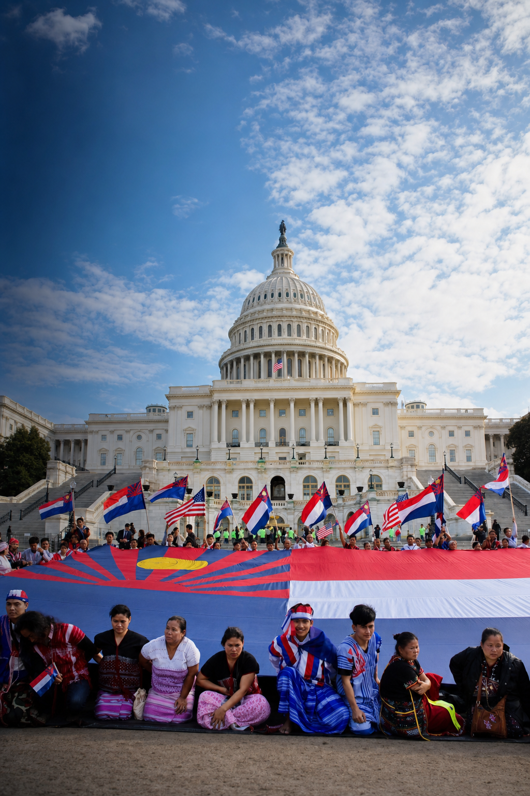

01 · Showing up
Presence can become power.
Karen advocates gather where national decisions are made and make community concerns visible.
One Capitol chapter
This page uses a single White House/Capitol motif, then moves to entirely different settings.